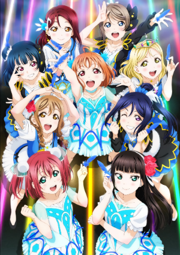

Love Live! School Idol Festival is a game from the anime "Love Live! School Idol Project!" and "Love live! Sunshine!". The game features all 18 of the school idol girls from the µ's (Pronouced "Muse") and Aqours.
Idols from µ's:
Honoka Kosaka
Kotori Minami
Umi Sonoda
Maki Nishikino
Hanayo Kozumi
Rin Hoshizora
Nico Yazawa
Nozomi Tojo
Eli Ayase
Idols from Aqours:
Chika Takami
Riko Sakurauchi
You Watanabe
Ruby Kurosawa
Yoshiko (or Yohane) Tsushima
Hanamaru Kunikida
Mari Ohara
Kanan Matsuura
Dia Kurosawa

This game is basically a rhythm game with School Idols,the µ's and Aqours have their own song you can play.
Bokura wa Ima no Naka de (one of my favorite songs from the µ's):
Some other good songs from the µ's:
START:DASH!!
Sunny Day Song (heck you osu!)
Aishiteru Banzai
Its our miraculous time
G Senjou no Cinderella (One of my favorites from the Aqours):
Some other good songs from the Aqours:
Guilty Kiss
These are love gems. They're used for "Honor scouting" which basically means that you can get cards from the girls in the idol groups instead of just some filler cards.
Here's a video of scouting for cards: (using rinsenpai's video because I dont have any Loves Gems unless if i make a japanese account..)